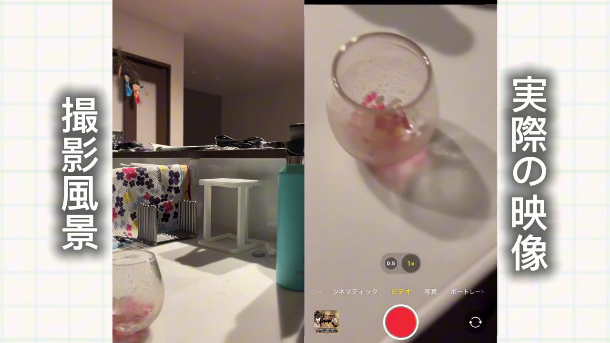
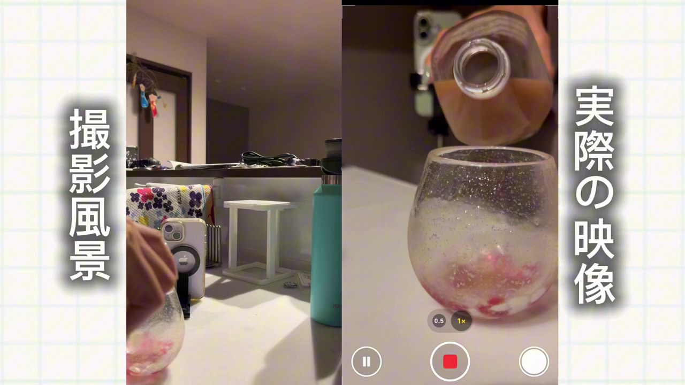
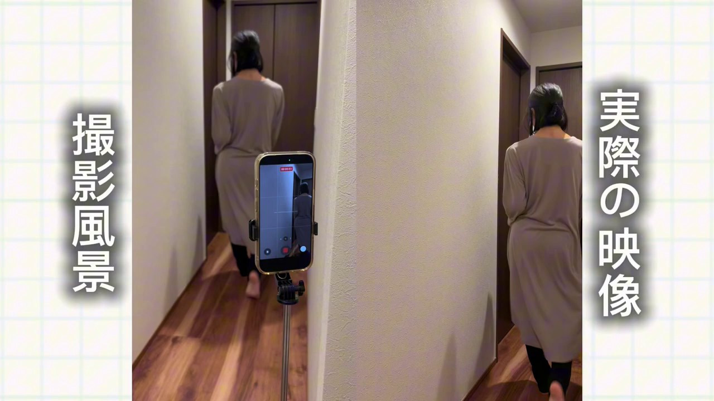
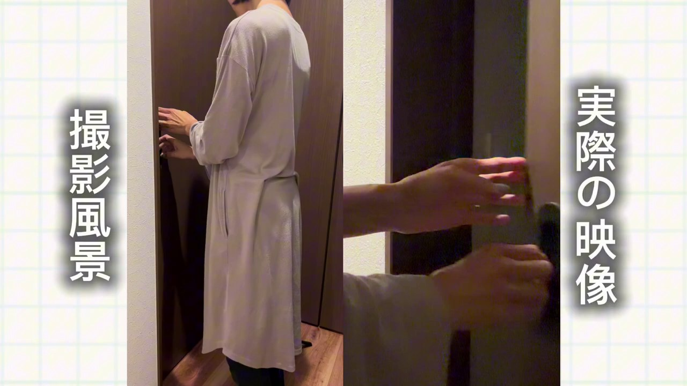
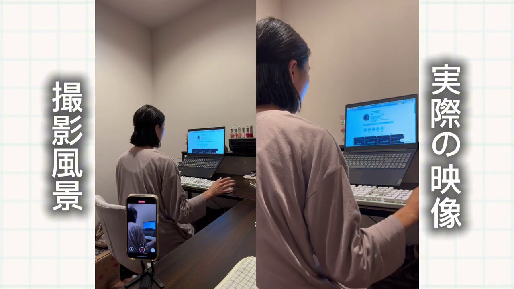
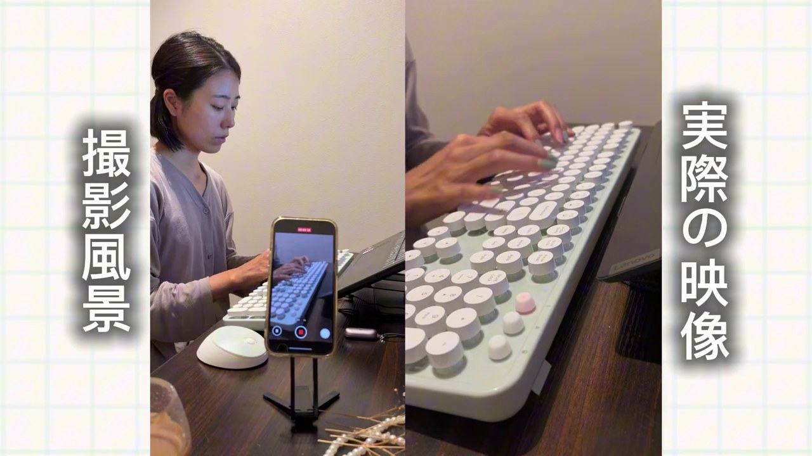
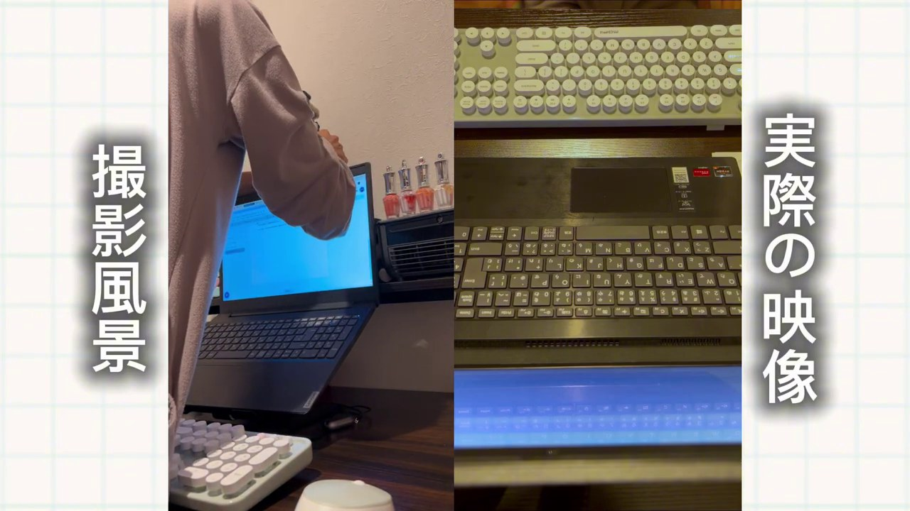
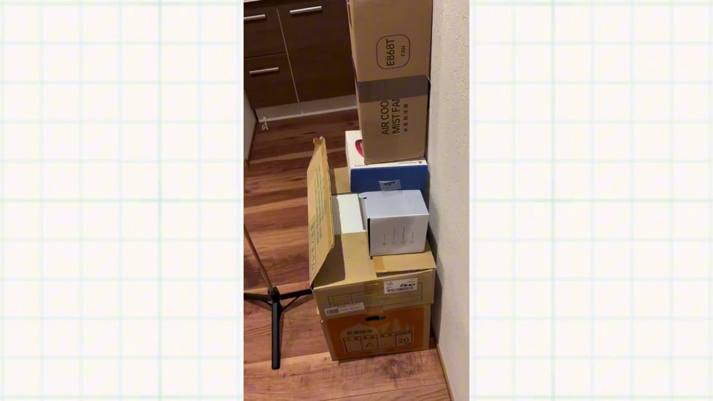

映る場所だけ整える
部屋全体を片づけなくてOK。手元のアップなら、画面に入る小さな範囲だけをきれいにします。
NO FACE, STILL YOU
顔出しをしなくても、手元・後ろ姿・暮らしの動作だけで、あなたらしいリールは作れます。家にあるものとスマホで始める撮影アイデアを、実例つきでまとめました。

THE BASIC IDEA
顔を隠すことだけを考えると、映像が窮屈になりがち。主役を「顔」から「手・背中・道具・動き」に置き換えると、自然で伝わる素材になります。
部屋全体を片づけなくてOK。手元のアップなら、画面に入る小さな範囲だけをきれいにします。
「注ぐ」「持ち上げる」「開ける」など、動作を細かく分けると編集で使いやすくなります。
スマホの位置・高さ・向きを少し変えながら、顔が入らず主役が見える画角を探します。
6 SHOT RECIPES
動画内の実例を「何を映すか」「どこにスマホを置くか」に分解しました。最初は全部撮らなくても、ひとつ選べば十分です。

SHOT 01 · 手元飲み物を注ぐだけでも、暮らしの空気感が伝わる素材に。注ぎ終えたあとにグラスを持ち上げる動作も続けて撮ると、別カットとして使えます。

SHOT 02 · 後ろ姿スマホを固定したら、顔が入らない位置から歩いて画面の奥へ。振り返らなくても「これから何かが始まる」導入カットになります。

SHOT 03 · 部分アップ日常の移動も立派な素材。ドアノブと手元に寄れば、顔を映さず場面転換を作れます。「開ける→入る→閉める」を分けて撮るのもおすすめ。

SHOT 04 · 作業風景椅子に座る、パソコンを開く、手をキーボードへ置く。いつもの作業を一連で撮ると、Vlogらしい流れが作れます。

SHOT 05 · 超寄り何を入力するかより、指のリズムが大切。動画では同じ短い文章を繰り返し打って撮影しています。近くに寄るほど、生活感を切り取れます。

SHOT 06 · 真上真上アングルは、顔を避けながら「何をしているか」を一目で見せられます。ノートPCなら本体のキーボードを使うと、画面の中がすっきりまとまります。
EDIT-FRIENDLY SHOOTING
長い1本を撮るより、短い動作を素材として集めるのがコツ。前後に余白を残せば、カットもしやすくなります。
動作前の静かな画を残す
注ぐ、開ける、打つ
動作直後も余白を残す
寄り・引きで同じ動作をもう一度
NO SPECIAL GEAR
撮影を始めるために、高価な三脚を買う必要はありません。高さを出したいときは段ボールや本を重ね、スマホはティッシュ箱や空き箱を支えにして固定できます。もっと安定させたい場合は、100円ショップのスマホスタンドを使うのもおすすめ。最初から完璧な機材をそろえず、今あるものでまず1本撮ってみましょう。

安全メモ：真上撮影や高い位置からの撮影は、落下しない固定を最優先に。無理な角度は避けてください。
BEFORE YOU PRESS REC
タップして確認できます。全部を完璧にするより、ひとつずつクリアして撮り始めるのがおすすめです。
WATCH THE FULL VIDEO
スマホを置く位置と、実際に撮れた画角を見比べながら確認してください。
顔出しなしリールの撮影方法｜mina